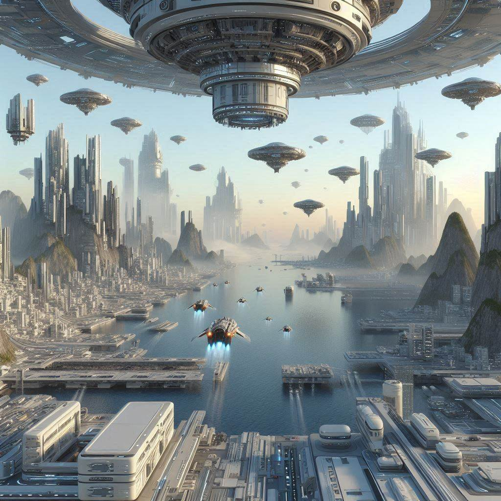

🎨 El Futuro del Diseño: ¡Explora el Mundo del Diseño 3D! 🌐
¿Listo para Transformar tus Ideas en Realidad? El diseño 3D está revolucionando la forma en que percibimos el mundo digital. Desde la creación de impresionantes paisajes virtuales hasta productos innovadores, el diseño 3D permite a los artistas y diseñadores dar vida a sus visiones de manera realista y envolvente. ¡Imagina tus ideas flotando en un espacio tridimensional, listas para ser exploradas desde todos los ángulos! No te quedes atrás, únete a la revolución del diseño 3D hoy mismo. 🚀 ¡Descubre más sobre el diseño 3D y cómo puede transformar tu creatividad!